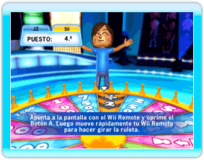
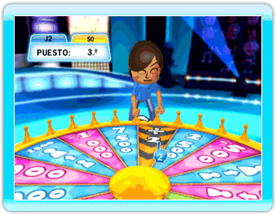

16 |
Ruleta |
 |
|
Al final de cada ronda del quiz Clásico, Jerry te preguntará si quieres girar la ruleta. Si aceptas, podrás ganar un montón de dinero... o perder un montón de dinero.
CONSEJO: ¡Ten en cuenta que si otros jugadores giran la ruleta, podrían ganar suficiente dinero para ponerse a la cabeza en la clasificación! Cómo interactuar con la ruleta y posibles resultados:
 Los concursantes que decidan girar la ruleta irán uno a uno. Cuando sea tu turno, tendrás que hacer esto: 1. AGARRAR LA RULETA Oprime el Botón A para agarrar la ruleta. 2. GIRAR Mueve rápidamente el Wii Remote hacia la derecha o hacia la izquierda para girar la ruleta. 
Una vez que hayas girado la ruleta, girará durante unos segundos y se parará en un extra, una penalización o en una sección de trueque. Si consigues un resultado positivo, ganas dinero. ¡El resultado ‘x2’ multiplica por dos el dinero que ya tenías! Si consigues un resultado negativo, pierdes dinero. El resultado ‘÷2’ hace que pierdas la mitad del dinero que ya tenías. Si el resultado es ‘Tomar’, podrás tomar dinero del rival que quieras. Jerry te pedirá que elijas al concursante del que tomarás dinero. Para hacerlo, apunta al concursante que elijas con el Wii Remote y oprime el Botón A para confirmar. Si el resultado es ‘Dar’, tendrás que dar dinero al rival que elijas. Jerry te pedirá que elijas al concursante al que quieras darle dinero. Para hacerlo, apunta al concursante que elijas con el Wii Remote y oprime el Botón A para confirmar. Si el resultado es ‘Intercambiar’, tendrás que intercambiar todo tu dinero con el rival que elijas. Jerry te pedirá que elijas al concursante con el que quieres intercambiar el dinero. Para hacerlo, apunta al concursante que elijas con el Wii Remote y oprime el Botón A para confirmar. |
 |
 |
 |